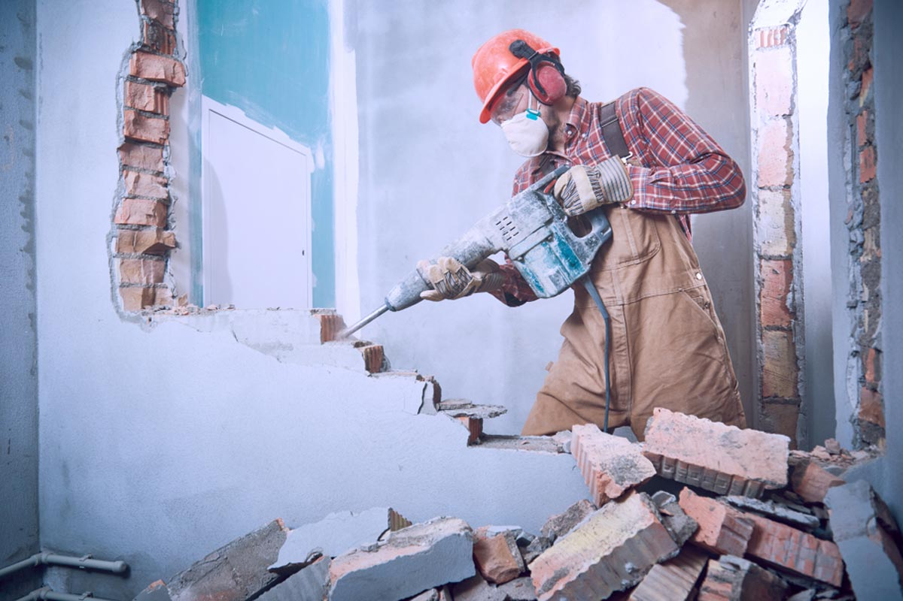

اختيارك لمقدم خدمة محترف في هدم المباني وتكسير الخرسانة بالرياض موثوقون لخدمات تكسير الخرسانة وحلول المعالجة في الموقع في المملكة العربية السعودية ، وخبراء محترفون لمقاولي الهدم وإعادة التدوير
خبراء في مجال الهدم والتكسير للمباني والفلل والقصور حيث اننا نعمل بأحدث الطرق والمعادت، نوفر خدمة قص الأبواب والداريش وتخريم الخرسانة وفتح مناضد التهوية وفتحات الاسانسير
 قص باب جدار دريشه شباك قص ليزر قص بلوك منشار
يوجد لدينا منشار خرسانه و كمبروسر تكسير و يوجد بوكات ودينه و ترحيل مخلافات وعماله لجميع الاعمل
تكسير جدران و فتح أبواب و مباني لياسه
كل ما تحتاج لمعرفته حول تكسير الخرسانة في الرياض
ما هو تكسير الخرسانة وما فوائدها في الرياض؟
تكسير الخرسانة ، هدم الخرسانة ، إعادة تدوير الخرسانة ، تكسير الخرسانة لإعادة الاستخدام ، تعدين
الرياض
لمحة عامة عن التقنيات المختلفة المستخدمة في تكسير الخرسانة بالرياض
طرق تكسير الخرسانة وشاشات الركام والكسارات في الرياض واختيار الكسارة الأمثل لصناعة الأسمنت
اختيارك لمقدم خدمة محترف في تكسير الخرسانة بالرياض موثوقون لخدمات تكسير الخرسانة وحلول المعالجة في الموقع في المملكة العربية السعودية ، وخبراء محترفون لمقاولي الهدم وإعادة التدوير
لدينا ايضاً دينة قلاب لتوريد جميع مواد البناء

امكانية نقل رمل واسمنت وبلوك ومخلوط واسفلت وترحيل مخلفات، بلك طوب اخشاب جكات شده معدنيه ونقل مخلفات
البناء.
0534785366